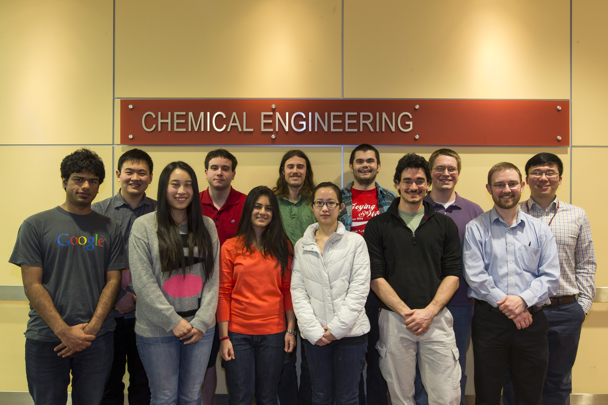

About us
The Kitchin research group is run by Associate professor John Kitchin in the Chemical Engineering Department at Carnegie Mellon University.
Our group combines experimental and computational research to work on problems in electrochemistry, CO2 capture, and materials design.
I use this site to test concepts in using Python in engineering education and materials modeling as well as in the integration of code and narrative text.
To visit us
My office is in Doherty Hall A207F Department of Chemical Engineering Carnegie Mellon University Pittsburgh, PA 15213 412-268-7803
Enter the front of Doherty Hall. Take the stairway on your left past the front office and go down one floor to the A level. Turn left coming out of the stairwell, and proceed down the hall. Turn right before the double doors and go to the set of offices at the end of the hall. I am in A207F.
Parking: Park in the East Campus Garage. The following link contains a Google map showing where the Garage is and how to get to my office.
View Carnegie Mellon University in a larger map with directions to my office.

Current postdocs
No positions available
Current PhD students
Alex Hallenbeck (expected graduation: May 2016)
Matt Curnan (expected graduation: May 2016)
Zhongnan Xu (expected graduation: May 2016)
Jacob Boes (expected graduation: May 2017)
John Michael (expected graduation: May 2018)
Mehak Chawla (expected graduation: May 2018)
Current Master's students
Current Undergraduates
No positions available
Former Group members
- Jing Chou (M.S. 2007)
- Li Yuan (Postdoc 2008)
- Frank DeCarlo (M.S. 2010)
- Sneha Akhade (M.S. 2011)
- Spencer Miller (PhD 2011)
- James Landon (PhD 2011)
- Nilay Inoglu (PhD 2011)
- Rich Alesi (PhD 2012)
- Robin Chao (PhD 2012)
- Vivek Vinodan (M.S. 2013)
- Zhizhong Ding (M.S. 2013)
- Ethan Demeter (PhD 2013)
- Anita Lee (PhD 2013)
- Bin Liu Postdoc 2013
- Prateek Mehta (M.S. 2013)
- Steve Illes (M.S. 2014)
- Nitish Govindarajan (M.S. Dec 2014)
- Meiheng Lu (M.S. Dec 2014)
- Wenqin You (M.S. Dec 2014)